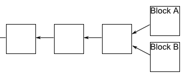

- Transaction message:
- Alice will then sign the message with her private key:
- Bob can then verify that the message is from Alice by checking the signature, check that the hash is valid and that he cannot be found in his local blockchain, he finds that is is:
- But Bob do not consider the transaction "verified" yet. He will broadcast this message to all users in his network and ask them to verify the transaction
- Users will respond to Bob that the message is correct considering their current blockchain
- Bob can now give Alice the potato she bought him.
The block-chain: A tree instead of an array
I’ll analyse double spending shortly. Before doing that, I want to fill in an important detail in the description of potato-coin. We’d ideally like the potato-coin network to agree upon the order in which transactions have occurred. If we don’t have such an ordering then at any given moment it may not be clear who owns which potato-coins. To help do this we’ll require that new blocks always include a pointer to the last block validated in the chain, in addition to the list of transactions in the block. (The pointer is actually just a hash of the previous block). So typically the block chain is just a linear chain of blocks of transactions, one after the other, with later blocks each containing a pointer to the immediately prior block:

Occasionally, a fork will appear in the block chain. This can happen, for instance, if by chance two miners happen to validate a block of transactions near-simultaneously – both broadcast their newly-validated block out to the network, and some people update their block chain one way, and others update their block chain the other way:
This causes exactly the problem we’re trying to avoid – it’s no longer clear in what order transactions have occurred, and it may not be clear who owns which potato-coins. Fortunately, there’s a simple idea that can be used to remove any forks. The rule is this: if a fork occurs, people on the network keep track of both forks. But at any given time, miners only work to extend whichever fork is longest in their copy of the block chain.
Suppose, for example, that we have a fork in which some miners receive block A first, and some miners receive block B first. Those miners who receive block A first will continue mining along that fork, while the others will mine along fork B. Let’s suppose that the miners working on fork B are the next to successfully mine a block:

After they receive news that this has happened, the miners working on fork A will notice that fork B is now longer, and will switch to working on that fork. Presto, in short order work on fork A will cease, and everyone will be working on the same linear chain, and block A can be ignored. Of course, any still-pending transactions in A will still be pending in the queues of the miners working on fork B, and so all transactions will eventually be validated.
Likewise, it may be that the miners working on fork A are the first to extend their fork. In that case work on fork B will quickly cease, and again we have a single linear chain.
No matter what the outcome, this process ensures that the block chain has an agreed-upon time ordering of the blocks. In Bitcoin proper, a transaction is not considered confirmed until: (1) it is part of a block in the longest fork, and (2) at least 5 blocks follow it in the longest fork. In this case we say that the transaction has “6 confirmations”. This gives the network time to come to an agreed-upon the ordering of the blocks. We’ll also use this strategy for potato-coin.
With the time-ordering now understood, let’s return to think about what happens if a dishonest party tries to double spend. Suppose Alice tries to double spend with Bob and Charlie. One possible approach is for her to try to validate a block that includes both transactions. Assuming she has one percent of the computing power, she will occasionally get lucky and validate the block by solving the proof-of-work. Unfortunately for Alice, the double spending will be immediately spotted by other people in the potato-coin network and rejected, despite solving the proof-of-work problem. So that’s not something we need to worry about.
A more serious problem occurs if she broadcasts two separate transactions in which she spends the same potato-coin with Bob and Charlie, respectively. She might, for example, broadcast one transaction to a subset of the miners, and the other transaction to another set of miners, hoping to get both transactions validated in this way. Fortunately, in this case, as we’ve seen, the network will eventually confirm one of these transactions, but not both. So, for instance, Bob’s transaction might ultimately be confirmed, in which case Bob can go ahead confidently. Meanwhile, Charlie will see that his transaction has not been confirmed, and so will decline Alice’s offer. So this isn’t a problem either. In fact, knowing that this will be the case, there is little reason for Alice to try this in the first place.
An important variant on double spending is if Alice = Bob, i.e., Alice tries to spend a coin with Charlie which she is also “spending” with herself (i.e., giving back to herself). This sounds like it ought to be easy to detect and deal with, but, of course, it’s easy on a network to set up multiple identities associated with the same person or organization, so this possibility needs to be considered. In this case, Alice’s strategy is to wait until Charlie accepts the potato-coin, which happens after the transaction has been confirmed 6 times in the longest chain. She will then attempt to fork the chain before the transaction with Charlie, adding a block which includes a transaction in which she pays herself:

Unfortunately for Alice, it’s now very difficult for her to catch up with the longer fork. Other miners won’t want to
help her out, since they’ll be working on the longer fork. And unless Alice is able to solve the proof-of-work at least as
fast as everyone else in the network combined – roughly, that means controlling more than fifty percent of the computing
power – then she will just keep falling further and further behind. Of course, she might get lucky. We can, for example,
imagine a scenario in which Alice controls one percent of the computing power, but happens to get lucky and finds six
extra blocks in a row, before the rest of the network has found any extra blocks. In this case, she might be able to
get ahead, and get control of the block chain. But this particular event will occur with probability 1/100^6 = 10^{-12}.
A more general analysis along these lines shows that Alice’s probability of ever catching up is infinitesimal, unless
she is able to solve proof-of-work puzzles at a rate approaching all other miners combined.
Mining
Outroduction
Of course, this is not a rigorous security analysis showing that Alice cannot double spend. It’s merely an informal plausibility argument. The original paper introducing Bitcoin did not, in fact, contain a rigorous security analysis, only informal arguments along the lines I’ve presented here. The security community is still analysing Bitcoin, and trying to understand possible vulnerabilities. You can see some of this research listed here, and I mention a few related problems in the “Problems for the author” below. At this point I think it’s fair to say that the jury is still out on how secure Bitcoin is.
The proof-of-work and mining ideas give rise to many questions. How much reward is enough to persuade people to mine? How does the change in supply of potato-coins affect the potato-coin economy? Will potato-coin mining end up concentrated in the hands of a few, or many? If it’s just a few, doesn’t that endanger the security of the system? Presumably transaction fees will eventually equilibriate – won’t this introduce an unwanted source of friction, and make small transactions less desirable? These are all great questions, but beyond the scope of this post. I may come back to the questions (in the context of Bitcoin) in a future post. For now, we’ll stick to our focus on understanding how the Bitcoin protocol works.